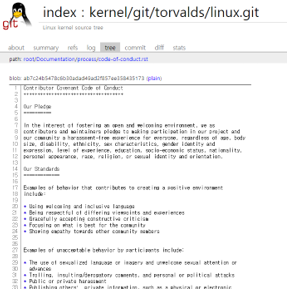

오픈소스 관련 인물들
1.리누스 토발즈(Linus Benedict Torvalds)
1)업적
리누스 토발즈는 리눅스 이외에도 많은 업적을 남겼는데, 대표적으로 GIT이 있다. 리누스 토발즈는 초기에 리눅스 커널 소스 코드를 관리하면서 기존의 [1]버전 관리 시스템(VCS)이 마음에 들지 않는다는 이유로 아예 사용하지 않았다. 그러다, 버전 관리에 어려움을 겪자, ‘BitKeeper’라는 프로그램을 사용하기로 결정했다. BitKeeper는 상용 소프트웨어였지만, 분산 처리 기능과 비교적 빠른 성능 덕분에 사용했다고 한다. 토발즈의 이런 선택은 자유 소프트웨어 단체로부터 비난을 받았으나 자유 소프트웨어 진영에서도 마땅한 대안을 제시하지는 못했다. 그러다가, BitKeeper 쪽에서 리버스 엔지니어링 문제로 리눅스에 관한 지원을 끊었고 결국, 토발즈는 직접 버전 관리 시스템을 만들기로 했다. 그렇게 만든 게 바로 Git이었다. Git은 기존의 버전관리 시스템과 다르게 저장소와 히스토리를 더불어 복제하기 때문에 서버에 문제가 생기면 이 복제물로 다시 작업을 시작할 수도 있다. 또한, 엄청나게 빨라서 대형 프로젝트에 사용하기도 좋다. 그 외에도 많은 강력한 장점들을 가진 Git은 오늘날 많은 개발자들이 빠르고 동시다발적으로 작업을 하는 데 많은 도움을 주고 있다.2)근황
최근 리누스 토발즈에 관한 소식은 실로 흥미롭다. 토발즈가 이제까지 자신의 무례한 행동에 관해 사과를 한 것이다. 토발즈는 사람을 코드로 평가하기로 유명했다. 범죄자라도 코드만 좋으면 충분히 프로젝트에 합류 시킬 수 있다고 생각했고, 만약 코드가 별로라면 인신공격을 서슴치 않았다. 그런 그가 이제까지 자신의 행동은 프로답지 못했다며 사과를 하고, 충분한 휴식기를 가지면서 프로다운 모습을 보이도록 노력하겠다고 말한 것이다. 그리고 리눅스는 새로운 CoC(Code of Conduct, 행동강령)를 받아들였는데,
현재 몇몇 리눅스 개발자들은 이 행동강령을 보고 코드로만 평가를 받아야할 개발자들이 코드 이외의 태도에 관해서도 신경을 써야하는 것이냐며 반발을 하고 있다. 자세한 내용은 아래의 페이지를 참고하길 바란다.
[리눅스 CoC] https://git.kernel.org/pub/scm/linux/kernel/git/torvalds/linux.git/tree/Documentation/process/code-of-conduct.rst
2.리차드 스톨만(Richard Matthew Stallman)
1)업적
자유소프트웨어 운동의 선구자이며 프로그래머이기도 하다. GNU 프로젝트와 자유 소프트웨어 재단을 설립하였고 GNU프로젝트를 진행하는 동안에는 GNU[2]컴파일러 모음(GCC), GNU Emacs등을 개발했고 ‘카피레프트’의 개념과 GNU 일반 공중 허가서를 도입했다.2)일화
리처드 스톨만이 MIT 공대의 인공지능 실험실의 해커로 활동하고 있었을 때였다. 실험실 동료들은 프린터기의 소스코드를 마음대로 사용해서 프린터기를 종종 고장내곤 했다. 동료 중 누군가 프린터기가 오류 메세지를 보내도록 프로그램을 수정해 놓으면, 또다른 누군가가 와서 그 오류를 고치는 일종의 장난질을 했던 것이다. 하지만, 이 장난질은 오래가지 못했는데, 실험실에 Xerox라는 새로운 프린터기가 설치되었기 때문이다. Xerox 프린터기의 소스코드는 패키지 안에 포함되지 않았고 그들이 예전 프린터기에서 사용했던 유지 관리와 같은 것을 설치할 수 없었다. 후에 리처드 스톨만은 다른 실험실의 누군가가 Xerox의 소스코드를 가지고 있다는 것을 듣고 소스코드를 얻기 위해 노력한다. 마침내, 그가 소스코드를 얻었을 때, 어쩌면 그의 인생을 바꿔버리는 결정적인 한마디를 듣게 된다. 프린터기의 소스코드를 받았음을 비밀로 해야 하며 다른 사람에게 줘서는 안된다고 한 것이다. 스톨만은 이런 이기적인 행동에 화가 났고 독점 시스템의 위험성에 대해 깨닫기 시작한다. 그리고 곧 자유소프트웨어 운동을 하기로 결심하게 된다.3.에릭 레이먼드(Eric Steven Raymond)
1)업적
에릭 레이먼드는 인류학자이자 오픈 소스 운동의 대표 인물이다. 그는 리눅스 커널이나 GCC(GNU Compiler Collection) 등을 사용하는 오픈 소스 개발과정이 어떤 방식인지, 오픈 소스 방식을 취하면서 어떻게 고품질의 소프트웨어를 만들 수 있는지를 철학적인 관점에서 고찰하여 ‘성당과 시장’이라는 논문을 발표하였다.(1)성당과 시장
에릭 레이먼드는 두 가지 방식의 자유 소프트웨어 개발 모델을 대조한다.성당 모델: 출시 때에만 소스 코드를 공개하고 그 사이에는 제한된 개발자들만 소스코드에 접근 할 수 있는 폐쇄적 개발 스타일로, 소규모의 프로젝트 그룹이 체계적이고 권위적인 방법으로 운영된다. 릴리즈 간격은 매우 길다.
시장 모델: 소스 코드가 인터넷으로 일반에 공개된 상태로 개발된다. 프로젝트 외부의 사람들로부터 끊임없이 피드백을 요구하며 상당히 집중적인 상호 검토 과정을 거친다. 릴리즈 간격은 매우 짧다.
코드가 공개되어 있으면 많은 사람들이 테스트하고 훑어볼 수 있어서 버그는 빨리 잡힐 것이고 이에 반해, 성당 모델에서는 소스코드를 관련 개발자들만 볼 수 있으므로 버그를 잡는데 시간이 걸릴 것임을 주장하고 있다. (리누스의 법칙)
4.이언 머독(Ian Murdock)
1)업적
이언 머독은 리눅스 배포판 중 하나인 [3]Debian GNU/LINUX(데비안)를 창시한 개발자이며 [4]자유소프트웨어의 가장 충직한 지지자였다.데비안은 가장 큰 장점은 ‘안정성’에 있다. 국제 우주 정거장에 쓰이는 수많은 윈도우XP 노트북을 대체하기위해 데비안을 선택할 정도로 데비안의 안정성은 크게 알려져있다. 데비안 deb 패키지 저장소는 Experimental(실험)- Unstable(불안정) - Testing(테스팅) - Stable(안정)의 단계를 가지며 testing버전은 차기 배포판을 만들기 위한 준비 공간으로 testing버전의 버그 수가 일정한 수 이하가 되면 stable 버전으로 올라간다. 이런 배포판 세부구조의 엄격한 관리는 데비안 배포판의 안정성을 뒷받침하게 된다.
데비안은 Debian Social Contract(DSC)를 만들어 데비안 자유소프트웨어 지침(DFSG)을 만들었는데, 이는 자유 소프트웨어 공동체가 오픈소스의 정의의 기초로 채택한 것이다.
데비안 자유 소프트웨어 지침 (DFSG, The Debian Free Software Guidelines)에 관한 내용은 아래의 페이지를 참고하길 바란다.
[데비안 페이지 이동] https://www.debian.org/social_contract.1.0.ko.html